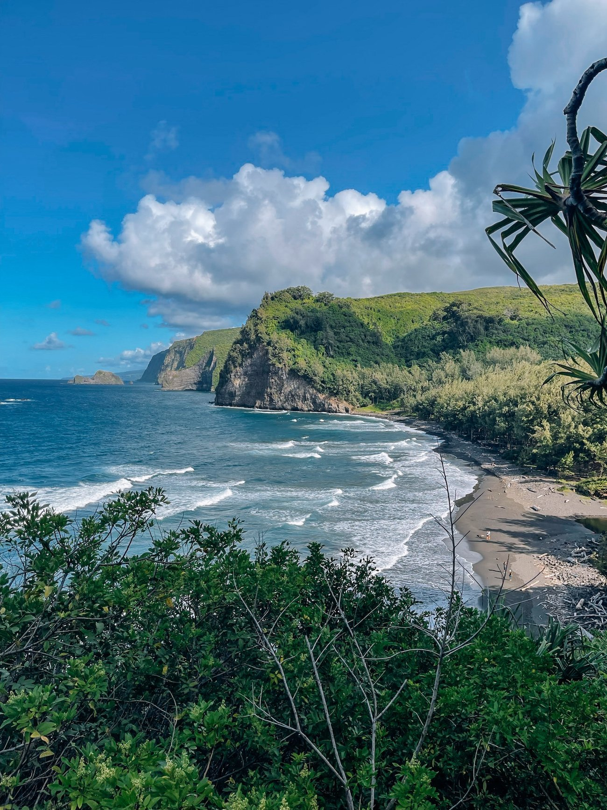
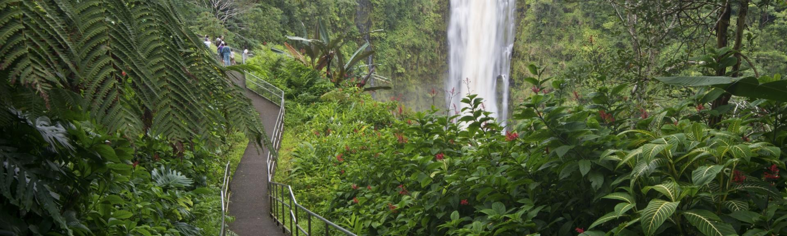

The island is often referred to as the Island of Hawaii or Hawaii Island to distinguish it from the state. It is also referred to as The Big Island, due to its size relative to the other islands. In Hawaiian, the island is sometimes called Moku o Keawe. The word keawe has several meanings. One definition, "southern cross", is said to be the name of an ancient chief. Another definition is "the bearer" (ke-a-we). Hawaii County is the local administrative unit.
Hawaii is allegedly named after Hawaiʻiloa, a legendary Polynesian navigator who is said to have discovered the island. Other accounts attribute the name to the legendary realm of Hawaiki, a place from which some Polynesians are said to have originated, the place where they transition to in the afterlife, or the realm of the gods and goddesses. James Cook, the English explorer and navigator who captained the first European expedition to reach the Hawaiian Islands, called it O-Why-hee (from Hawaiian) and the "Sandwich Islands" after his patron, the Earl of Sandwich.
Hawaii was the home island of Paiʻea Kamehameha, later known as Kamehameha the Great. Kamehameha united most of the Hawaiian islands under his rule in 1795, after several years of war, and gave the kingdom and the island chain the name of his native island. In 1822, missionary William Ellis arrived and was one of a party that completed a tour of the island, descriptions of which were later published in his journal.
Hawaii is allegedly named after Hawaiʻiloa, a legendary Polynesian navigator who is said to have discovered the island. Other accounts attribute the name to the legendary realm of Hawaiki, a place from which some Polynesians are said to have originated, the place where they transition to in the afterlife, or the realm of the gods and goddesses. James Cook, the English explorer and navigator who captained the first European expedition to reach the Hawaiian Islands, called it O-Why-hee (from Hawaiian) and the "Sandwich Islands" after his patron, the Earl of Sandwich.
Hawaii was the home island of Paiʻea Kamehameha, later known as Kamehameha the Great. Kamehameha united most of the Hawaiian islands under his rule in 1795, after several years of war, and gave the kingdom and the island chain the name of his native island. In 1822, missionary William Ellis arrived and was one of a party that completed a tour of the island, descriptions of which were later published in his journal.

At ʻAkaka Falls State Park, located along the northeastern Hilo Coast, you can see two gorgeous waterfalls on one short hike. The pleasant 0.4-mile uphill hike will take you through a lush rainforest filled with wild orchids, bamboo groves and draping ferns.
As you follow the paved footpath, you'll first see 100-foot Kahuna Falls. Continue to follow the loop around the bend, and you'll discover towering ʻAkaka Falls which plummets 442-feet into a stream-eroded gorge. Beautiful ʻAkaka Falls is perhaps the island of Hawaiʻi's most famous waterfall. Easily accessible, this hike takes less than an hour.
The native wildlife inclide the ʻoʻopu ʻalamoʻo which is an endemic Hawaiian species of goby fish that spawns in stream above the waterfall, but matures in the sea. These fish have a suction disk on their bellies that allows them to cling to the wet rocks behind and adjacent to the waterfall. Using this disk, they climb back up to the stream when it is time to spawn. A shrimp called the ʻōpaekalaʻole has also evolved to climb ʻAkaka Falls and live in Kolekole.
As you follow the paved footpath, you'll first see 100-foot Kahuna Falls. Continue to follow the loop around the bend, and you'll discover towering ʻAkaka Falls which plummets 442-feet into a stream-eroded gorge. Beautiful ʻAkaka Falls is perhaps the island of Hawaiʻi's most famous waterfall. Easily accessible, this hike takes less than an hour.
The native wildlife inclide the ʻoʻopu ʻalamoʻo which is an endemic Hawaiian species of goby fish that spawns in stream above the waterfall, but matures in the sea. These fish have a suction disk on their bellies that allows them to cling to the wet rocks behind and adjacent to the waterfall. Using this disk, they climb back up to the stream when it is time to spawn. A shrimp called the ʻōpaekalaʻole has also evolved to climb ʻAkaka Falls and live in Kolekole.
Join our membership program for 3% off all trips! Members also get an extra 1% discount at when they have flown over 50000 miles with us!
Join us at (123)-456-7890